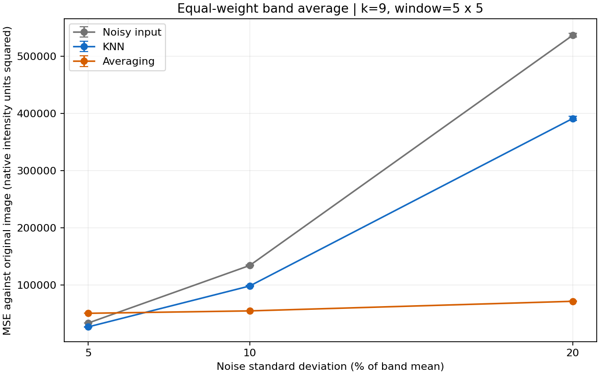
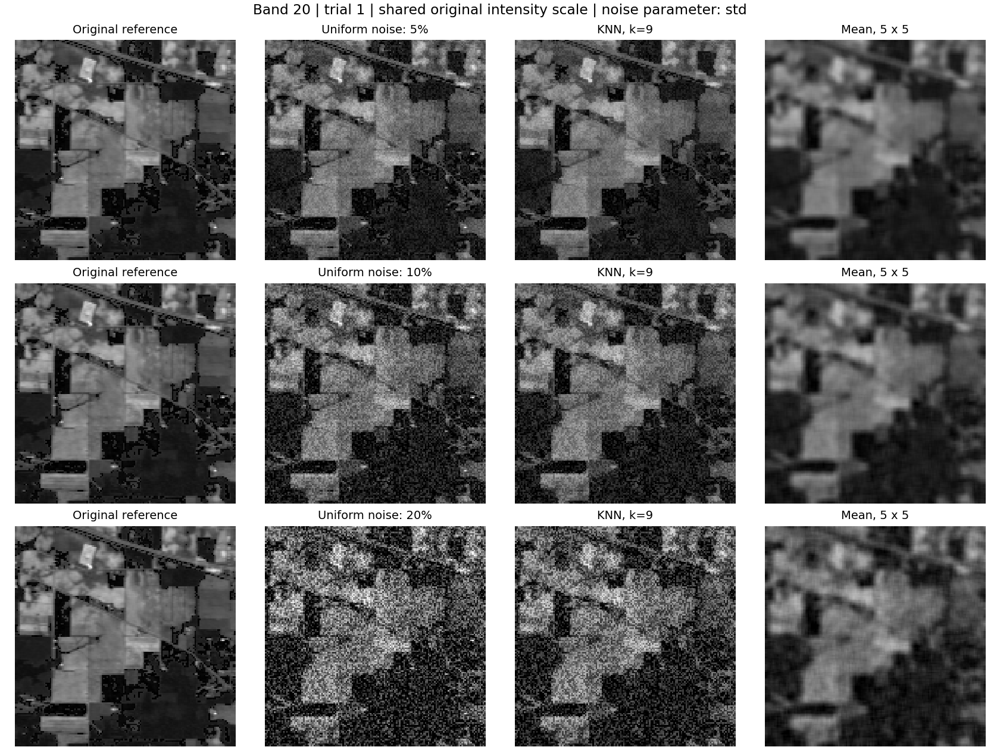
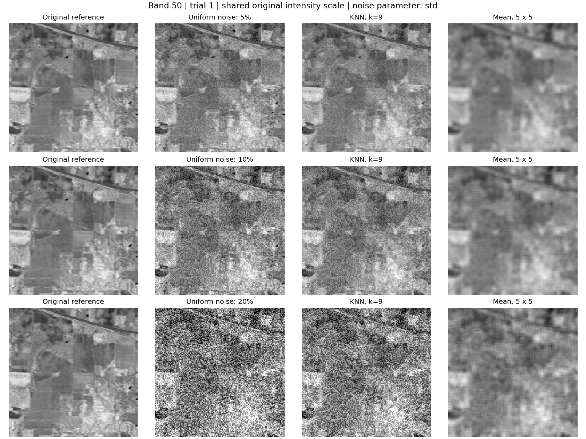
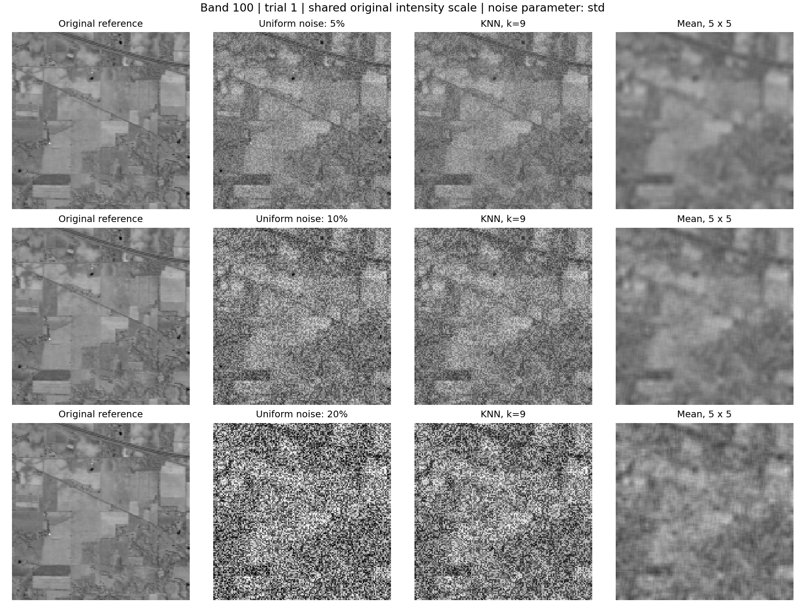
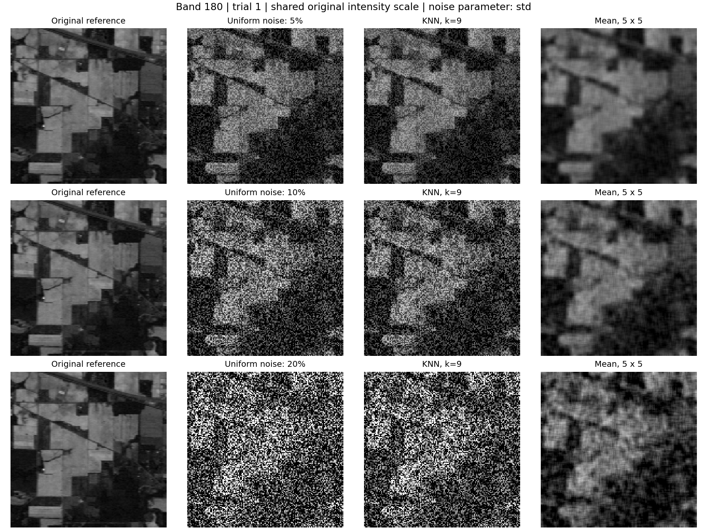

GNR 607 · Reproducible computational experiment
Add uniform noise at three levels, filter with intensity-nearest neighbours and a simple local mean, and compare reconstruction error against the original image.
Input: data/Indian_pines_corrected.mat. Loaded shape: [145, 145, 200]; one-based bands: [20, 50, 100, 180]. The supplied example uses the corrected Indian Pines AVIRIS cube, with visible and infrared coverage. The source also supplies a land-cover ground-truth map. Source: University of the Basque Country GIC dataset page; original data reference: Purdue Indian Pine Test Site 3 dataset.
The land-cover map is not a clean radiometric image and is not used in denoising MSE. The original downloaded image before synthetic corruption is the reference; it may already contain sensor noise. This experiment measures recovery from the added noise.
Seed: 607. Repetitions: 3. Each trial and band has its own seeded noise stream; across noise levels, the same stream is scaled to the target standard deviation, providing a paired comparison. The table reports mean ± sample standard deviation of aggregate MSE across trials, not a confidence interval. Realized noise mean and population standard deviation are recorded in per_band_results.csv.
| Noise level | Noisy input MSE | KNN MSE | Averaging MSE |
|---|---|---|---|
| 5% | 33532.253 ± 207.367 | 26760.786 ± 191.316 | 50508.229 ± 106.137 |
| 10% | 134129.014 ± 829.469 | 98267.844 ± 719.172 | 54714.766 ± 180.121 |
| 20% | 536516.055 ± 3317.877 | 391083.673 ± 3640.414 | 71479.324 ± 241.888 |

At 5% noise, the lower aggregate MSE is obtained by KNN. At 10% noise, the lower aggregate MSE is obtained by averaging. At 20% noise, the lower aggregate MSE is obtained by averaging.
Averaging can reduce independent noise strongly in uniform areas, but blurs boundaries and small structures. KNN preferentially uses similar intensities and may preserve boundaries, but the noisy centre also guides neighbour selection, so it can retain noise. Neither method is guaranteed to win. Results depend on k, window size, scene texture, spectral band and noise level.
k = 1 reproduces the noisy input, while k = window² reproduces averaging. A larger k generally increases smoothing; this is not a guarantee of lower MSE. Native-unit aggregate MSE gives more influence to bands with larger absolute errors; inspect the per-band results as well. The selected four-band example does not establish performance on all 200 bands.
Trial 1 is shown. Each band's panels use one shared display scale derived from the original band; display saturation does not change stored arrays or MSE.




From the project directory run (adjust absolute paths if moving the project):
python run_project.py --image data/Indian_pines_corrected.mat --mat-key indian_pines_corrected --bands 20 50 100 180 --k 9 --window 5 --trials 3 --seed 607 --noise-parameter std --output results
The exact arguments and image dimensions for this run are in run_metadata.json. Source and download checksums are in ../data/source_manifest.json for the supplied dataset. Trial-1 floating-point originals, noisy images and filtered images are in trial1_images.mat. CSV files contain all numerical results. Filters, selection, mean, noise generator and MSE are written manually in core.py; external libraries handle file I/O, storage and figures only.